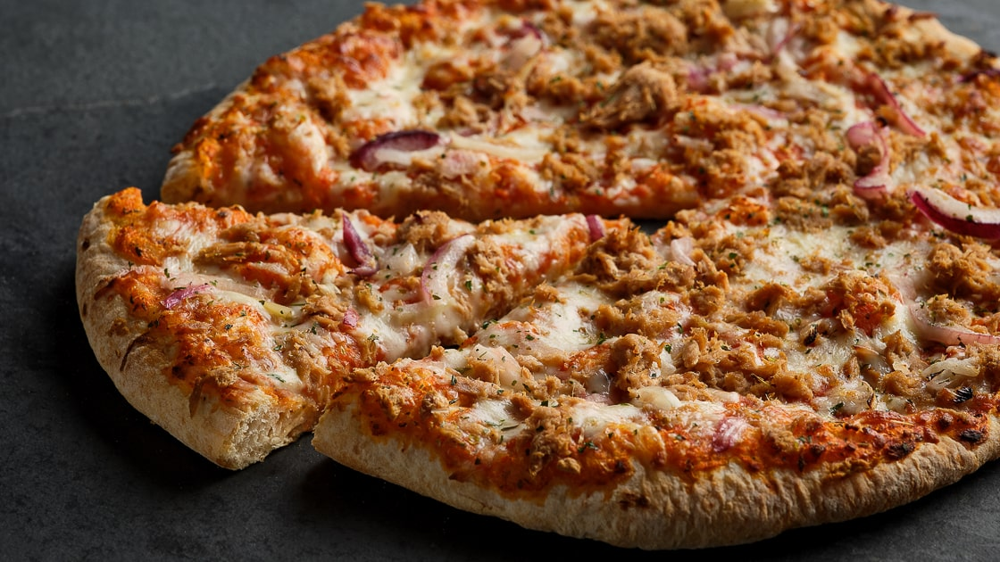

Pizza Tonno Recipe

Pizza Tonno is a simple and savory Italian-style pizza topped with tomato sauce, melted mozzarella, tender tuna, and thinly sliced red onions. It's quick to make, full of flavor, and perfect for an easy homemade meal.
Ingredients
- Pizza dough
- Tomato sauce
- Canned tuna (drained)
- Mozzarella cheese
- Red onion (thinly sliced)
- Olive oil
- Salt and pepper
Steps
- Preheat the oven to 220°C / 430°F.
- Roll out the pizza dough and place it on a baking tray.
- Spread tomato sauce evenly over the dough.
- Sprinkle mozzarella cheese on top.
- Add the tuna and red onion slices.
- Drizzle with a little olive oil and season with salt and pepper.
- Bake for 12-15 minutes until the crust is golden and the cheese has melted.
Back to recipes overview